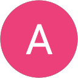

German as a foreign language from A1 to C1 – in small groups, with experienced teachers and official telc & TestDaF exams. Right on Kaiser-Wilhelm-Ring, at the MediaPark.
“Language is the key to the world.”
Since we were founded in 1998, several thousand participants have successfully learned German or a foreign language with us – with experienced, superbly trained teachers at fair prices.
A limited number of participants and a placement test ensure that everyone finds the right group and really gets to speak.
Licensed telc & TestDaF exam centre and FaDaF member. Every level ends with a test and a recognised certificate – included in the course price.
In the middle of Cologne city centre on Kaiser-Wilhelm-Ring, right by the MediaPark – excellently reachable by train and bus.
Varied instead of dry: discussions, role-plays, interviews as well as group and individual work – German that works in everyday life and at work.
Whether intensive course, evening course or one-to-one training – tap a course for all the details.
Not sure which course fits? We'll advise you free of charge →
Our level system follows the Common European Framework of Reference (CEFR). You join exactly where you are.
First sentences for everyday life: introducing yourself, asking and answering simple questions.
Handling familiar situations – shopping, work, your immediate surroundings and daily life.
Getting by independently in daily life, describing experiences, giving reasons for opinions.
Ready for work & study – including the B2 exam for the recognition of nursing staff.
Mastering complex topics with confidence – the basis for TestDaF and university study in Germany.
Each level lasts 2 course months = 8 weeks (160 teaching hours) and ends with a test and a CEFR certificate – included in the course price. For complete beginners, a new intensive course starts on the first working day of every second month; advanced learners can join almost any time.
activ lernen is a licensed exam centre for telc and TestDaF and a member of FaDaF – the professional association for German as a Foreign Language. Your certificates are officially recognised, for work, study or professional recognition.
Intensive group courses – calculated to be participant-friendly and proven since 1998. Placement, exam & certificate are included.
Included: placement test, exam & CEFR certificate. In addition: one-to-one German training from 39 € per teaching hour (45 min), other languages from 44 €, each plus a one-time registration fee. We always offer you a free, no-obligation trial lesson. Just ask if you have questions →
The best school for learning German in Cologne. Both my brother and my sister in law studied here and was capable of speak German in less than 3 months. They have really good teachers. But most important, Markus, the owner, is a really nice guy and always available to help, specially with the papers for the VISA application and guidance. Top school. 100% recommend.
I am a student from China, and I am delighted that I found the Activ Lernen language school through a Google Maps review. I am now happy to leave my own positive rating. The school is highly recommended and has exceeded my expectations: Visa Support Applying for a language visa from China is quite complex, and I had many questions regarding the required documents. The school administration was incredibly patient and prompt in responding to every single one of my emails, which was an enormous help during my stressful preparation period. Organization and Services The school offered very useful assistance with accommodation listings, which solved a major problem for me.（One of my Chinese friends who attends other language institutions still hasn't managed to find suitable accommodation. Her institutions also gave her an outrageously expensive quote, which was quite a shock to me, and it made me feel very lucky.）The school is centrally located and very close to the subway/U-Bahn station, which is ideal. The surrounding area is pleasant. The internal facilities are modern and clean, and they even provide affordable tea and coffee, which I really appreciate. Quality of Teaching The teachers are highly professional, dedicated, and extremely patient! ❤️ The curriculum design is also very reasonable: while explaining grammar, they integrate a large amount of speaking and writing practice. In the two months since I started here, my German proficiency has improved by leaps and bounds. 🥰 I highly recommend Activ Lernen to all students, especially those coming from abroad. Finally, a big thank you to the entire team for the outstanding support!!!
I really wanted to leave this review because my experience here felt genuinely good, not just correct. The vibe in the school is super welcoming, the teachers are approachable, and everything feels well organized without being stiff or bureaucratic. You don’t feel like just another student, more like part of a small community that actually wants you to succeed. The location in Cologne is also very convenient, which makes going to class much easier and less stressful. Overall, it’s a place where you can learn German in a relaxed but effective way, and I’d definitely recommend it to anyone starting their journey here in German

AAI’ve been studying here for just over 3 weeks and I’m really happy so far. The atmosphere at the school is welcoming, the teachers are patient and make the lessons engaging. I already feel motivated and I’m learning faster than I expected. I definitely recommend this school to anyone who wants to start learning German!
A very professional and well-organized language school. The staff are friendly, patient, and always willing to help with questions. Communication was clear and reliable throughout the process, which made everything much easier. I really appreciate their supportive attitude and would definitely recommend this school to others who are looking for a serious and pleasant learning environment.
Write to us – together we'll find the right course and your start date. Personal advice in German, English, Spanish, French & Portuguese.
Fill in the form – we'll get back to you with your matching course and start date.
We'll get back to you as soon as possible with your matching course and start date. See you soon at activ lernen!